Hilly peninsula at the southernmost end of Marin County, located just north of San Francisco across the Golden Gate Bridge, famous for their views of the Bay Area, especially of the Golden Gate Bridge
Open daily 6am to 1 hour after sunset
Marin Headlands Visitor Center
Open Friday to Monday 9:30am to 4pm
CLOSED Veterans Day November 11; Thanksgiving, November 25; Christmas Day; New Year's Day
Overview
The Marin Headlands are rugged, windswept hills just across the Golden Gate Bridge from San Francisco, famous for their sweeping views of the bridge, the city skyline, the bay and, on clear days, the Farallon Islands. Part of the Golden Gate National Recreation Area, they offer hiking, biking, beaches such as Rodeo Beach and Kirby Cove, the Point Bonita Lighthouse, and wildlife including harbor seals, gray whales in spring and fall, and seabirds.
The headlands hold a wealth of military history, from 1890s gun batteries to World War II bunkers, Fort Cronkhite, Fort Barry and a Cold War Nike missile site (SF-88), all now decommissioned and open to visitors. Hawk Hill is a famous autumn hawk migration watch.
This article uses material from the Wikipedia articles "Marin Headlands", which are released under the Creative Commons Attribution-Share-Alike License 3.0
Featured Locations
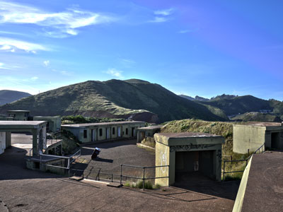
Ɱ, CC BY-SA 3.0, via Wikimedia Commons; Image Size Adjusted
Battery Spencer Overlook
High cliff-top vantage point makes for great views of Golden Gate Bridge and was a prime location for big coastal defense guns when the army was here
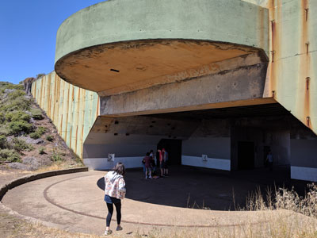
Leijurv, CC BY-SA 4.0, via Wikimedia Commons; Image Size Adjusted

Battery Townsley
Casemated battery that mounted two 16-inch caliber guns, each capable of shooting a 2,100 pound projectile 25 miles out to sea
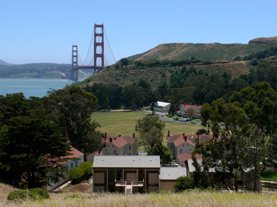
https://www.flickr.com/photos/taylar/, CC BY 2.0, via Wikimedia Commons; Image Size Adjusted

Fort Baker
Consists of over 25 historic army buildings clustered around a main parade ground, a sheltered harbor protected by a jetty, a number of historic gun emplacements, and trails and forested areas climbing gently up from San Francisco Bay
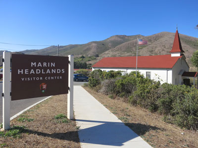
Fabrice Florin, CC BY-SA 3.0, via Wikimedia Commons; Image Size Adjusted

Fort Barry
Encompasses the historic military post, as well as several historic batteries, including Battery Mendell and Battery Alexander and the Point Bonita Lighthouse area
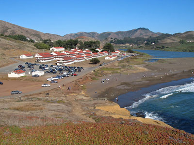
Sanfranman59, CC BY-SA 3.0, via Wikimedia Commons; Image Size Adjusted
.JPG){kind=link}
Fort Cronkhite
Former US Army post that served as part of the coastal artillery defenses of the San Francisco Bay Area during World War II

Tarwin Stroh-Spijer, CC BY-SA 4.0, via Wikimedia Commons; Image Size Adjusted
Hawk Hill
Prime vantage point for viewing thousands of hawks, eagles, falcons, and vultures collectively known as “raptors” and spectacular views of the Golden Gate Bridge and San Francisco skyline
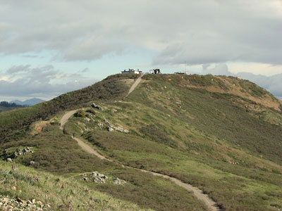
David Berry from Rohnert Park CA, USA, CC BY 2.0, via Wikimedia Commons; Image Size Adjusted
.jpg){kind=link}
Hill 88
Remnants of the buildings and large domes that sheltered various radar equipment associated the Integrated Fire Control (IFC) site to detect incoming threats
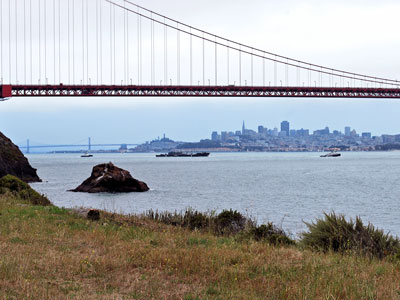
BenBench, CC0, via Wikimedia Commons; Image Size Adjusted

Kirby Cove Camp
Camp located in sheltered cove featuring a small beach with rocky bluffs on either side and forested by non-native eucalyptus, pine, and Monterey cypress. A coastal defense site, Battery Kirby, separates the campground from the beach
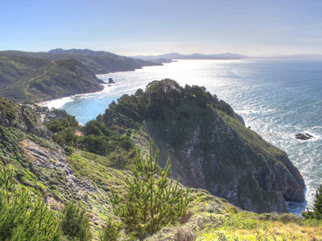
Dameon Hudson, CC BY 3.0, via Wikimedia Commons; Image Size Adjusted

Muir Beach and Outlook
1,000 feet (305 m) beach with coarse sand and several large boulders and outlook with views of Pacific oceanside cliffs
Muir Woods National Monument
Protects 554 acres, of which 240 acres are old growth coast redwood (Sequoia sempervirens) forests, one of a few such stands remaining in the San Francisco Bay Area
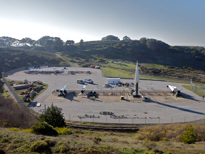
Marcin Wichary from San Francisco, U.S.A., CC BY 2.0, via Wikimedia Commons; Image Size Adjusted
.jpg){kind=link}
Nike Missile Site SF-88
Former Nike Missile launch site open to visitors
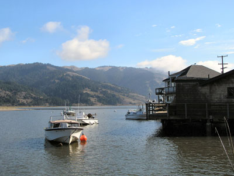
Stephen Sommerhalter, CC BY 3.0, via Wikimedia Commons; Image Size Adjusted

Olema Valley and Bolinas Ridge
Valley running from the southern end of Tomales Bay through Point Reyes Station, and ridge that parallels a section of the San Andreas Fault, featuring panoramic vistas with trees, meadows, and rounded hillsides
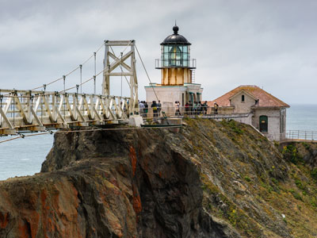
Frank Schulenburg, CC BY-SA 4.0, via Wikimedia Commons; Image Size Adjusted

Point Bonita Lighthouse
Third lighthouse built on the West Coast and helped shepherd ships through the Golden Gate straits and is still active
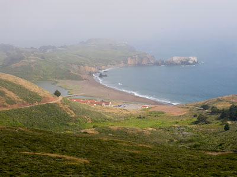
Christopher Michel from San Francisco, USA, CC BY 2.0, via Wikimedia Commons; Image Size Adjusted
.jpg){kind=link}
Rodeo Beach
Known for its dark, pebbly sand, its uses for surfing and sunbathing, and its locale as a place for viewing semi-precious stones
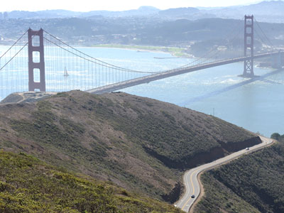
Tim Adams, CC BY 3.0, via Wikimedia Commons; Image Size Adjusted

Slacker Ridge
Offers stunning views of San Francisco and the Golden Gate Bridge and is generally less crowded than the other scenic vistas
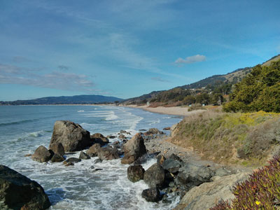
Mark Doliner from Sunnyvale, CA, USA, CC BY 2.0, via Wikimedia Commons; Image Size Adjusted

Stinson Beach
Long beach, with cold water produces fog throughout the year, is a popular day trip for people in the San Francisco Bay Area and for tourists visiting Northern California
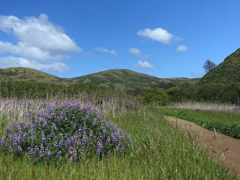
Jmatazzoni, CC BY-SA 4.0, via Wikimedia Commons; Image Size Adjusted

Tennessee Valley
Small, undeveloped part of Marin County, near Mill Valley featuring horse stables, a native-plant nursery, and numerous trails for hiking, biking, and horse riding, including a 1.7-mile, handicap-accessible trail that leads to Tennessee Cove and its beach